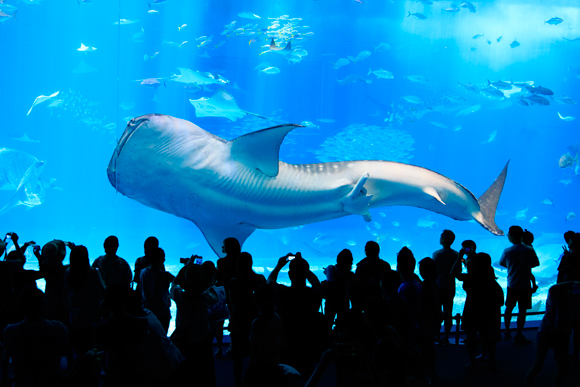
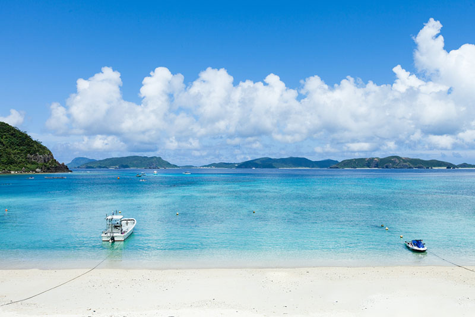

Cosas que no te puedes perder en Okinawa
Imagen de metropolisjapan.com 'Top 7 Aquariums to celebrate sea day'
- Sitios declarados patrimonio de la humanidad por la UNESCO
- El acuario Okinawa Churaumi con su fascinante vida maritima
- Relajarte en las hermosas playas con agua clara
- Actividades como kayak y mas
Playas de arena blanca
Imagen de japonismo.com
Cosas que puedes hacer en las playas de Okinawa
- Ir de excursion a la playa Hatenohama
- Ver las ruinas del antiguo castillo de Uegusuku y disfrutar de las vistas que desde ahí se tienen de toda la isla.Ver el atardecer en la playa Shinri o disfrutar también de otras playas de la isla, como la playa Eef o la playa Ama.
- Ver los pececillos de colores, cangrejos y otros animales marinos atrapados en las peceras naturales de agua que se forman en la costa norte de la isla con la marea baja.
- Cruzar el puente que conecta la isla Kume con Oshima para ver el Tatami Ishi. El Tatami-ishi literalmente "piedras de tatami", es una característica geológica en Kumejima, Okinawa, Japón. Se formó durante el período Mioceno por la unión columnar de lava andesítica a medida que se enfriaba y contraía.